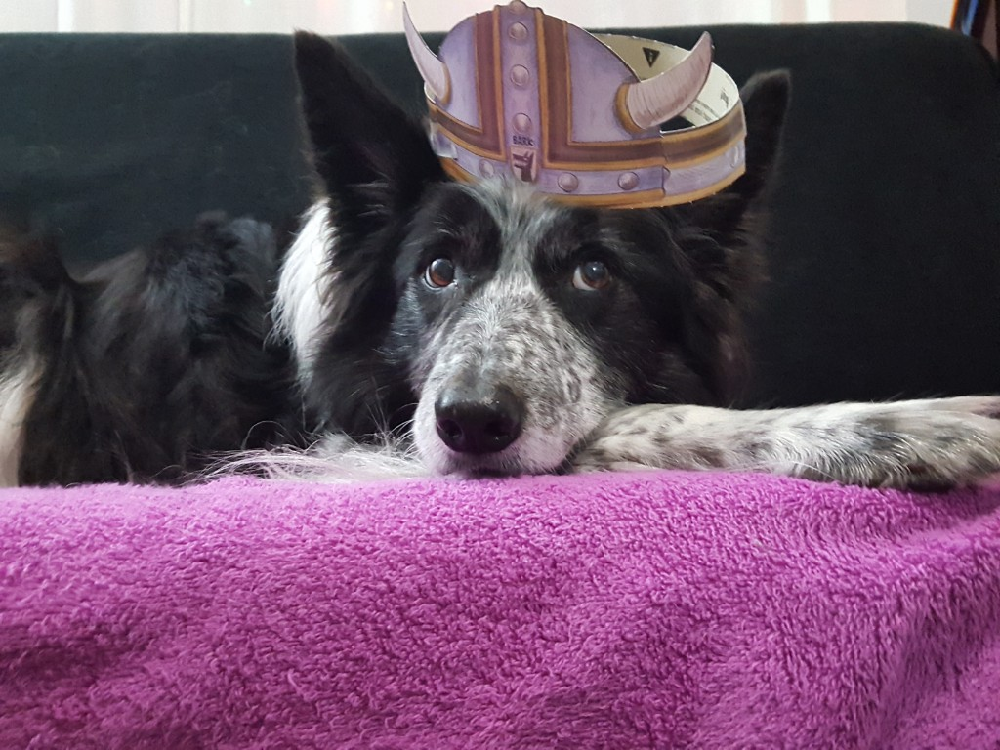
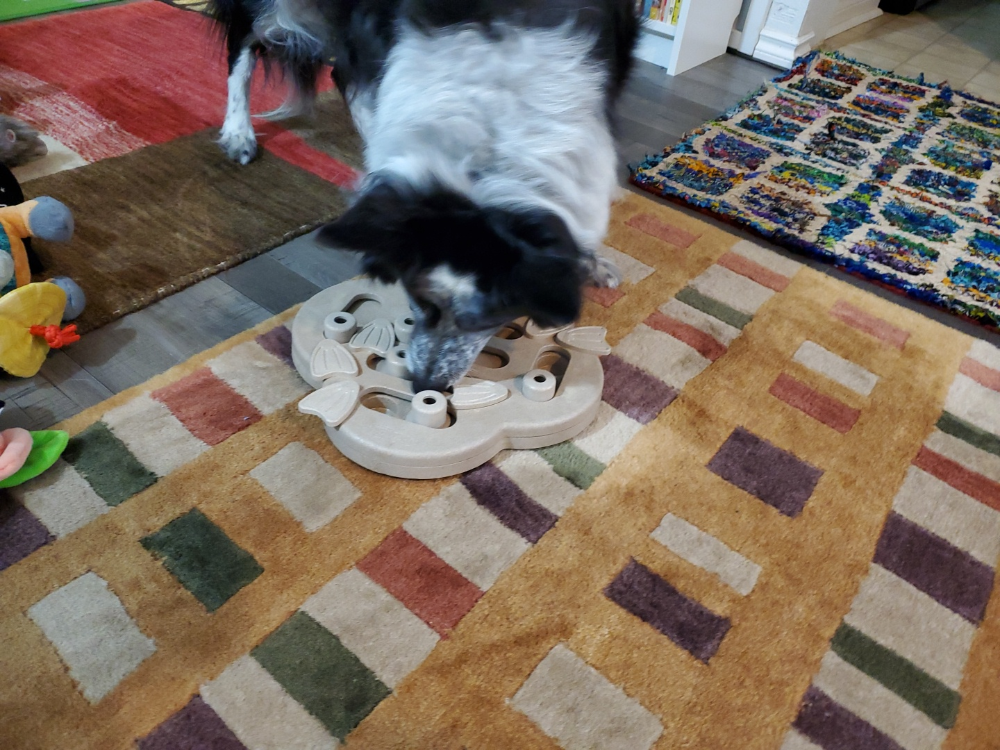
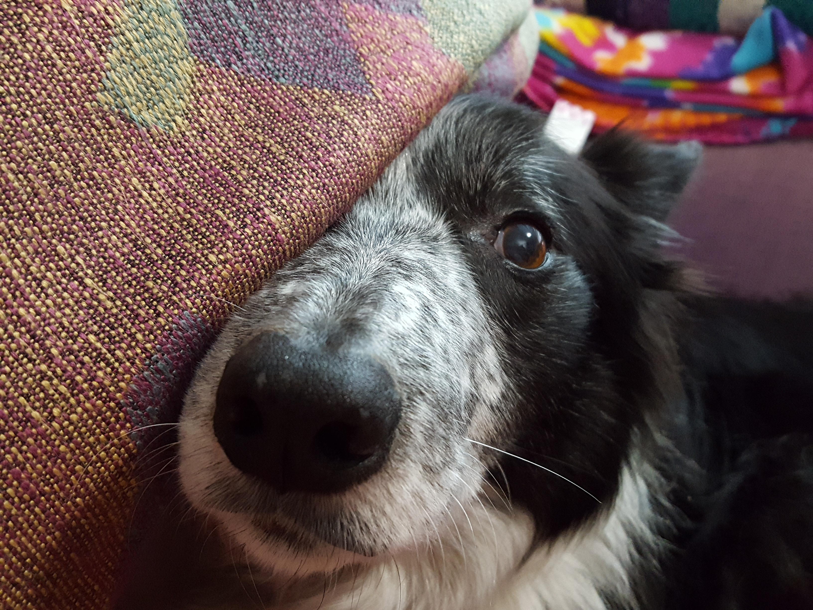
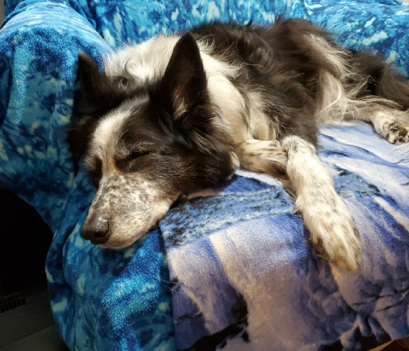

Kipp

Kipp in a silly hat.
Kipp, my border collie, was born on March 25, 2005, at a farm in Shelton, Washington.
I brought him home at the age of 2 months.
I brought him home at the age of 2 months.
I asked the very knowledgeable person with the puppies to pick out a friendly, cheerful soul for me. I went to visit when they were all 5 weeks old. The woman handed me Kipp and I was enchanted. So was Kipp, apparently, because when I set him down to
go get my camera, he cried and whined and paced until I came back 2 minutes later and picked him up again.
When he was housetrained and allowed to roam the house freely, he quickly learned how to steal toys from my other dog, Tess. If Kipp wanted what Tess had, Kipp would start barking. Tess, thinking there were burglars, would drop the toy, start barking,
and run for the door. Kipp would pick up the toy and merrily trot away with it.
Kipp knows all the basic commands like “sit,” “lie down,” and “don’t eat that,” along with many silly tricks. Now that he’s completely deaf at age 14, I’m grateful I taught him hand signals along with verbal cues for almost everything. With age comes
attitude: These days when I point at the floor (his cue to lie down), instead of lying down immediately, he will wander across the room, get a drink of water, and then curl up on his dog bed.
He earned the Expert Trick Dog certification on March 28, 2011, by learning over 40 tricks and performing them all for a mostly impartial judge (my dad). My dad’s favorite was when, for the tracking demonstration, I went outside and hid somewhere. He
held the leash and told Kipp to find me. Kipp, all business (and completely forgetting his leash manners), dragged my dad right to the tree I was hiding behind with no side trips, no squirrel chasing, and no nonsense.
Kipp also completed several Nosework classes and to this day will go berserk with joy if he sees the little tins in which one hides the scents of anise, birch, and clove. Nosework teaches dogs to alert for these scents but not to distinguish them from
each other. Thus, for fun, I also taught him to tell the difference between peppermint and vanilla for a scent discrimination exercise.
Kipp is a model citizen. He has never chewed up anything that does not belong to him. He sleeps quietly in his crate when I am not at home. He is friendly, cheerful, and has never required a muzzle when visiting the vet. His one fault is that he thinks
cats are demons and should be banished from this realm.
Kipp's handy guide to a happy life:

Walk
It's important patrol your neighborhood for illegal squirrel activity!

Play
So many toys! So little time!

Snuggle
Wear your human out with a walk, then cuddle on the couch.

Sleep
A nice comfortable chair is best for recharging the batteries.